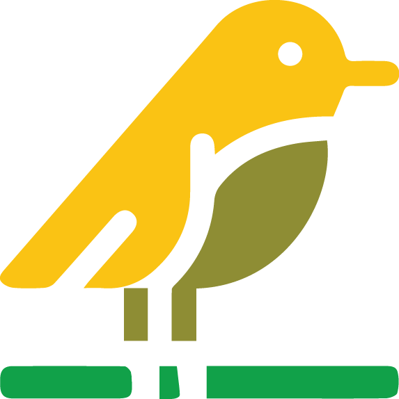
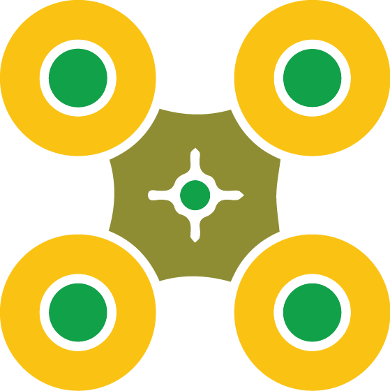
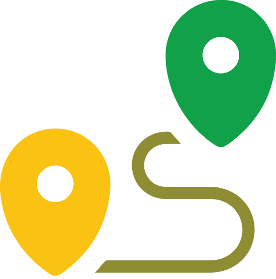

FAUNA
Coñece a fauna que habita no noso territorio ó amparo da Rede Natura 2000.

DRÓNS
Visita terras de Iria a vista de drón. Información sobre estes UAVs

RUTAS EN DODRO
Roteiros en bici e a pe que podemos desfrutar en este concello
RUTAS EN ROIS
Roteiros en bici e a pe que podemos desfrutar en este concello
RUTAS EN PADRÓN
Roteiros en bici e a pe que podemos desfrutar en este concello
DEPORTE
Aquí poderás atopar a localización das instalacións deportivas dos tres concellos
LECER
Poderás atopar calendarios de celebracións, festas, festivais, e máis nas terras de Iria.
ACTIVIDADES
Aquí atoparás xogos e información descargable.